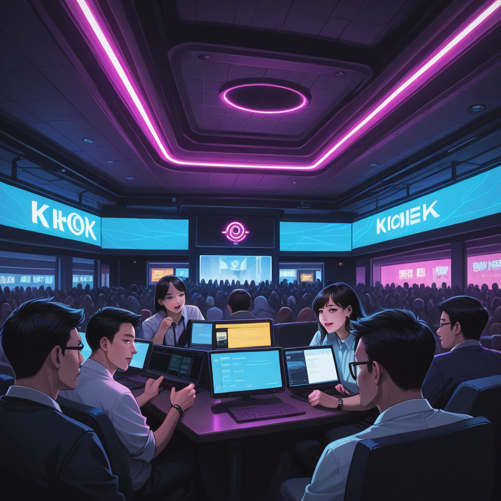

브로, 너도 알지? 엘든링 플레이 중 특정 패치버전에서 갑자기 나타나는 보스들. 공식 데이터베이스엔 없지만 실제 실행 파일은 존재하는 그들 말이야. 특히 1.04 버전과 1.08 버전 사이에서 충돌 박스가 달라지는 미사용 엔티티들을 발견한 경우가 있어.
이런 현상은 단순히 코드 누락이 아니라, 상태 머신 (State Machine) 의 특정 트래거가 활성화되지 않아 발생하는 문제거든. 예를 들어 `limgrave_zone` 맵 데이터에 연결된 `boss_model`은 존재하지만, 조건부 로직 `player_level > 70 && !quest_flag_set`을 만족하지 않으면 렌더링이 안 되는 경우야.
마포나 합정 근처 셔츠룸이나 가라오케 공간을 운영하는 브랜딩도 마찬가지다. 구글 상위 노출 키워드처럼 보이는 건 있지만 실제 클릭률 (CTR) 은 낮은 경우가 많지. 이는 '보스'가 존재하지만 플레이어가 진입하는 프레임 조건이 맞지 않아서야.

데이터마이닝에서 발견된 세 번째 유형은 `item_drop_null` 현상이야. 보스 처치 후 드랍 아이템 ID 는 생성되지만 UI 에서 텍스트가 깨져서 표시되지 않는 경우지. 이는 서버와 클라이언트 간 데이터 동기화 타이밍 오차 때문이야.
셔츠룸 운영자라면 이것이 바로 '고객 문의 처리 시간'이나 '예약 시스템 반응 속도'야. `ko.wikipedia.org` 에 기록된 게임 구조와 비슷하게, 고객 여정 (Customer Journey) 의 각 단계마다 숨겨진 병목 현상을 찾아내야 해.
특히 마포 홍대 인근의 단체 가라오케 예약 수요는 특정 요일과 시간대에 급증하는 패턴을 보여줘. 이를 예측하지 못하면 서버 오버로드는 물론이고, 브랜드 인지도 하락이 발생할 수 있지.
따라서 단순한 키워드 등록보다는 `https://shirtsking.dothome.co.kr/` 에서 확인하듯 상세 정보를 체계화하고 프레임 단위로 테스트해야 해. 마치 스피드런ners 가 1 프레임의 차이로 보스를 우회하듯, 브랜드 최적화도 미세한 조정이 핵심이니까.
마지막으로 실제 적용 조건은 '접근성'과 '신뢰도'야. 사용자가 검색할 때 보이는 첫 화면이 곧 게임 내의 `main_menu` 같지. 거기서 올바른 상태를 선택하지 못하면 아무리 좋은 콘텐츠도 도달하기 어려워.
참고 출처: ko.wikipedia.org